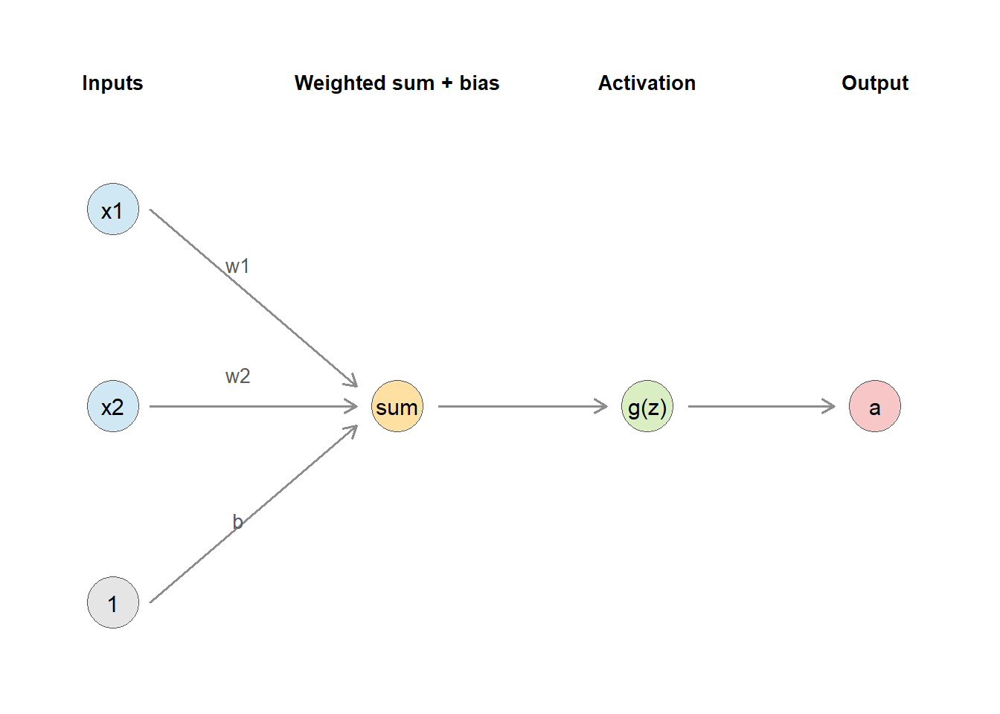
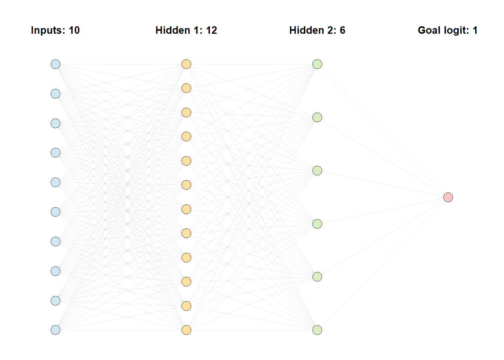
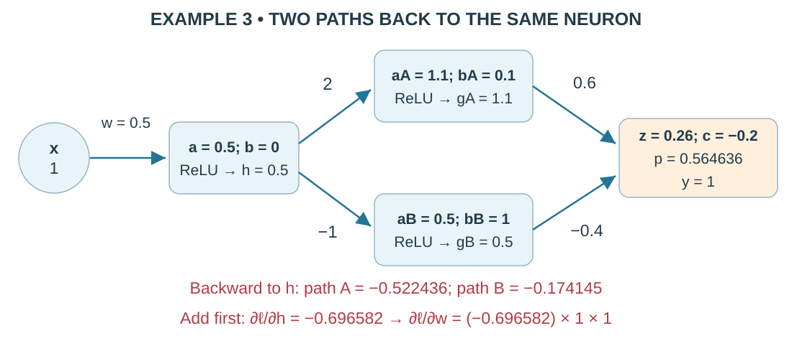
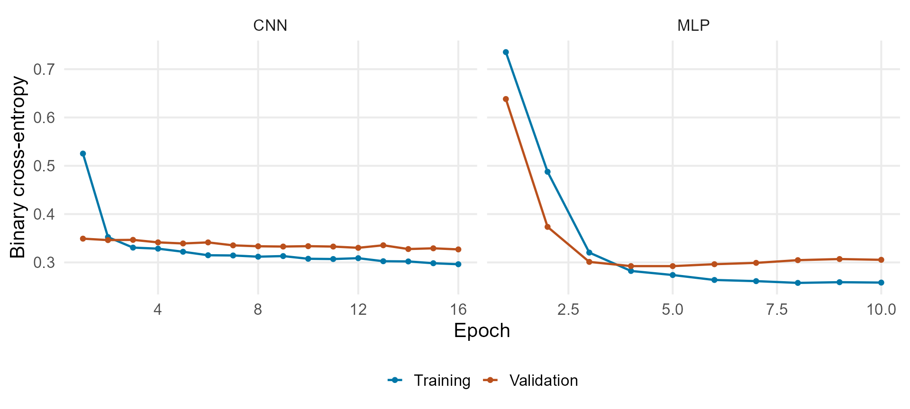
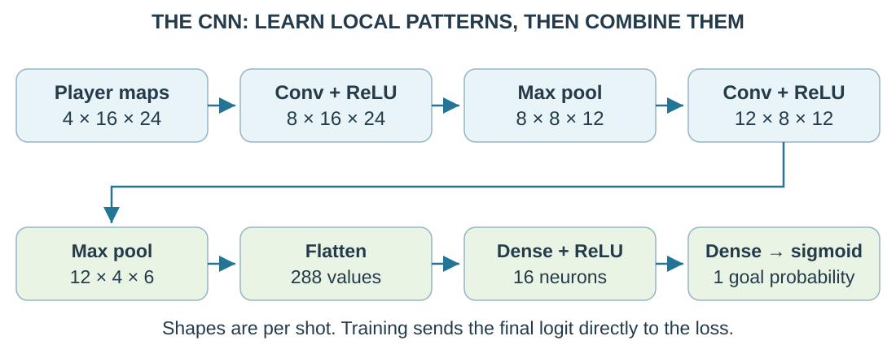
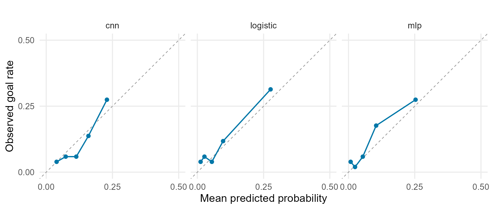
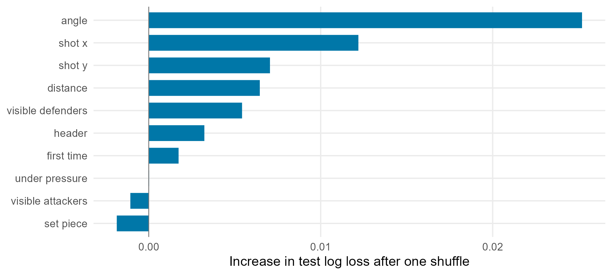
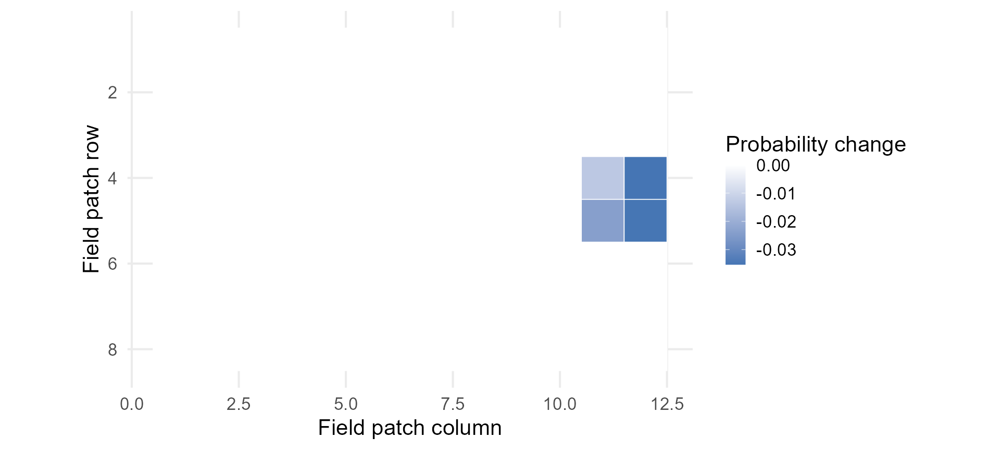

Lecture 3 Neural Networks for Sports Prediction
Section map: neural networks for shot prediction
| Section | Question |
|---|---|
| 3.1 Shot Prediction and a Logistic Baseline | What are we predicting, and what is a useful comparison? |
| 3.2 Multilayer Perceptrons | How do hidden neurons predict and learn? |
| 3.3 Training and Tuning | How do we choose settings and know when to stop? |
| 3.4 Convolutional Neural Networks | How can a neuron read a patch of the field? |
| 3.5 Spatial Expected Goals with a CNN | How do player maps become a goal probability? |
| 3.6 Evaluation and Interpretation | Are the probabilities useful, and how strong is the evidence? |
Goal probabilities from shot information
For each shot, estimate the chance it becomes a goal:
means goal. contains information available when the shot is taken.
What could player locations tell us beyond distance and angle? How could we check whether that information improves predictions?
Three models, two kinds of input
| Model | Inputs | What it learns |
|---|---|---|
| Logistic regression | 10 shot features | One weighted score before sigmoid |
| MLP | The same 10 features | More flexible combinations through hidden neurons |
| Spatial CNN | Four player-location maps | Local patterns using shared weights |
The MLP changes how the same inputs are combined. The CNN changes both the network and its inputs.
A model joining maps and shot features is a possible extension. The reported results cover the three models above.
Learning goals
By the end, you should be able to:
- calculate a prediction, its gradients, and a weight update;
- follow the input and output dimensions of a small CNN;
- use validation data to choose settings and saved weights;
- support a model recommendation with test scores and uncertainty.
We use the same soccer shots throughout, building on Lecture 2’s logistic regression and data splits.
3.1 Shot Prediction and a Logistic Baseline
Define the shot moment, keep matches together, and fit a simple comparison model.
The prediction moment
Expected goals (xG) is the goal probability for a shot that is taken. Use only information available at that instant.
| Available at the shot | Information from afterward |
|---|---|
| Location, angle, body part, pressure | Goal, save, or block outcome |
| Player locations in a freeze-frame snapshot | Ball’s ending location or later movement |
An xG of .20 means a 20% goal chance. Among 100 comparable shots given .20, about 20 should score. This agreement is calibration.
Using later information to predict an earlier outcome is leakage.
Keep each match in one data group
The data contain 1,430 shots from 64 matches in the 2022 men’s World Cup, from StatsBomb Open Data.
| Split | Matches | Shots | Role |
|---|---|---|---|
| Training | 44 | 953 | Fit weights and input scaling |
| Validation | 9 | 222 | Choose settings and when to stop |
| Test | 11 | 255 | Check final models after choices are fixed |
Shots within a match share conditions. Keep them together. Validation and test dates overlap on December 5, but no match appears in both. This tests later matches in the same tournament.
The baseline and MLP share 10 inputs
| Information | Feature columns |
|---|---|
| Geometry | shot_x, shot_y, distance, angle |
| Shot characteristics | header, set_piece, under_pressure, first_time |
| Visible players | visible_attackers, visible_defenders |
The defender count includes the goalkeeper. Standardization subtracts each column’s training mean and divides by its training standard deviation, including for 0/1 indicators.
Both models read the same 10 values. The CNN instead reads maps of player presence.
The logistic baseline
A baseline is a simple comparison model. Logistic regression adds weighted inputs and an intercept, then applies sigmoid:
| Quantity | Meaning |
|---|---|
| , the logit | Score before conversion to a probability |
| Fitted weight on input | |
| Goal probability between 0 and 1 |
There are 11 fitted coefficients: 10 weights and one intercept. Tutorial 3.1 shows the R fit and compares validation scores.
Checkpoint: one label, two probabilities
A shot becomes a goal. Two models forecast:
| Model | Goal probability | Label at a .50 threshold |
|---|---|---|
| A | .01 | No goal |
| B | .20 | No goal |
Both labels are wrong. Which probability forecast deserves the smaller penalty? Explain your answer to a partner before calculating anything.
3.2 Multilayer Perceptrons
Add hidden neurons to logistic regression, then calculate how their weights learn.
A neuron’s calculation

Multiply inputs by weights, add the bias, then apply an activation function: . Logistic regression uses sigmoid to turn the score into a probability.
Hidden neurons use ReLU
An activation transforms a neuron’s weighted sum. Our hidden neurons use ReLU:
| Input | Output | Slope used in backpropagation |
|---|---|---|
| 1: passes changes through | ||
| 0: blocks changes on this path |
Without a nonlinear activation, weighted sums of weighted sums combine into one weighted sum. ReLU lets hidden layers learn more complex relationships.
Hidden layers learn new input combinations

The MLP reads 10 inputs, passes through groups of 12 and 6 hidden neurons, and returns one logit. Each line is a weight. With one bias per hidden or output neuron, the network has 217 parameters.
Binary cross-entropy scores a probability
For one shot with outcome and goal probability :
| Outcome | Loss | Example |
|---|---|---|
| Goal, | gives 1.609 | |
| No goal, | gives .223 |
The training objective averages this loss across shots. Giving very little probability to the observed outcome incurs a large penalty.
Example 1: backward through one neuron

For , multiply the two local slopes: .
Then multiply by , , or 1 to obtain the weight and bias gradients.
Example 2: follow the hidden neurons

Forward: ; .
ReLU gives and . The red calculations show the later backward pass for .
Combine the hidden outputs into a probability
Use output weights , , and bias :
The forward pass takes inputs through hidden neurons to a logit, then a probability.
If the hidden outputs stay fixed, which output weight could change this prediction? Explain using and .
Backpropagation at the output
A gradient is a loss slope. Backpropagation works backward to calculate these slopes. Continue our example with and :
| Parameter | Calculation | Gradient |
|---|---|---|
| Output weight | ||
| Output weight | ||
| Output bias |
Gradient descent subtracts a multiple of each gradient. Next follow the slopes into the hidden layer.
Backpropagation through the hidden layer
The chain rule multiplies slopes along a path. With output weights and ReLU slopes :
| Hidden parameter | Calculation | Gradient |
|---|---|---|
The second neuron’s two weights and bias have zero gradients here because its ReLU is inactive.
One update, then another prediction
With learning rate , use for each parameter:
| Parameter | Update | New value |
|---|---|---|
Recalculate with unrounded values: , , . Loss falls from to .
Find all gradients with the old weights before updating. The four zero-gradient parameters stay unchanged.
Example 3: add both backward paths

Via A: . Via B: .
Add before continuing backward: .
R torch starts with a tensor
A tensor is a numeric vector, matrix, or higher-dimensional array that torch can calculate with.
requires_grad = TRUE asks torch to track a tensor’s gradients. Layers such as nn_linear() register their trainable weights automatically.
Use autograd to check Example 1
requires_grad marks the parameters whose loss slopes we want:
x <- torch_tensor(c(0.5, -1.0)) # Fixed inputs
w <- torch_tensor(c(0.8, -0.4), requires_grad = TRUE)
b <- torch_tensor(0.1, requires_grad = TRUE) # Trainable bias
z <- (w * x)$sum() + b # Weighted sum
loss <- nnf_binary_cross_entropy_with_logits(z, torch_tensor(1))
loss$backward() # Calculate gradients
as.numeric(w$grad) # -0.1445, 0.2891$backward() follows the chain rule; $grad stores the result. Weights have not changed yet. An optimizer performs the update.
Logits during training, probabilities for reporting
The last dense layer returns a logit. The loss accepts that value directly:
Convert logits when reporting a prediction:
Why would applying sigmoid before the logits-based loss change the calculation?
Define the MLP with nn_module()
initialize() creates layers once. self stores them in this model. model(x) calls forward() each time we predict.
mlp_module <- nn_module(
initialize = function(number_of_features = 10L) {
self$network <- nn_sequential( # Apply layers in order
nn_linear(number_of_features, 12), nn_relu(), # 10 -> 12
nn_linear(12, 6), nn_relu(), # 12 -> 6
nn_linear(6, 1) # One logit per shot
)
},
forward = function(x) self$network(x) # Reuse stored layers
)
mlp <- mlp_module(10) # Create one modelThe layers’ weights and biases appear in mlp$parameters automatically.
Train the MLP with the course helper
fit_binary_model() is defined in R/torch_helpers.R. It runs the training loop and saves the best validation weights.
source("R/torch_helpers.R") # Load the course functions
torch_manual_seed(431) # Reproduce initial tensor randomness
mlp_fit <- fit_binary_model(
model = mlp_module(10), # Construct a fresh MLP
x = tensors$tabular, y = tensors$target, # N x 10 inputs; N x 1 outcomes
training_indices = tensors$train, # Rows used for updates
validation_indices = tensors$validation, # Rows used for stopping
epochs = 30, batch_size = 64, learning_rate = 0.01,
patience = 5, seed = 431
)The returned list has $model (best saved network), $history (epoch losses), and $best_epoch (chosen checkpoint).
3.3 Training and Tuning
Repeat the update process, choose settings with validation data, and keep the best saved weights.
See the training and validation cycle

One epoch visits every training shot. Validation measures loss afterward with fixed weights. The test set never selects the stopping point.
One mini-batch produces one optimizer step
Create Adam once, then repeat the batch block with prepared x_batch and y_batch:
optimizer <- optim_adam(model$parameters, lr = 0.01) # Registered weights
model$train() # Enable training behavior (including dropout)
# Repeat for each batch:
optimizer$zero_grad() # Clear gradients from the previous batch
logits <- model(x_batch) # Forward pass
loss <- nnf_binary_cross_entropy_with_logits(logits, y_batch) # Mean loss
loss$backward() # Calculate gradients; weights stay fixed
optimizer$step() # Adam changes weights using those gradients
loss$item() # Read the scalar loss as an R numberFor 953 shots and batch size 64: 14 batches of 64 plus one of 57 give 15 steps per epoch.
Standardization puts inputs on comparable scales
Subtract each feature’s training mean and divide by its training standard deviation :
For distance 20, training mean 15, and standard deviation 5:
The value is one standard deviation above the training mean. Reuse these training values for validation, test, and future shots, including the 0/1 features in this example.
Early stopping keeps the best checkpoint
A checkpoint is a saved copy of the weights. Patience counts epochs without improvement. Consider these validation losses:
| Epoch | 1 | 2 | 3 | 4 | 5 | 6 |
|---|---|---|---|---|---|---|
| Loss | .36 | .32 | .30 | .31 | .33 | .34 |
With patience 3, when does training stop, and which weights should we use?
Stop after epoch 6. Restore epoch 3, the best validation checkpoint.
Validation uses fixed weights after each epoch. The test set does not choose the checkpoint.
The saved learning curves

The saved MLP is best at epoch 5. The CNN is best at its 16-epoch ceiling. A ceiling can end training before patience is exhausted.
The tutorial’s learning-rate experiment
Same MLP, seed, batch size 64, 12-epoch ceiling, and patience 3:
| Learning rate | Best epoch | Validation log loss |
|---|---|---|
| .001 | 12 | .4287 |
| .005 | 7 | .2936 |
| .010 | 5 | .2923 |
The slowest rate may need a longer budget. The two larger rates are close; the saved demonstration uses .01.
Compare settings on validation games. Check seed stability before interpreting a small difference as a reliable advantage.
Training problems and useful next checks
| Pattern | First checks |
|---|---|
| NaN (not a number) or growing loss | Check inputs, then try a lower learning rate |
| Both losses stay high | Check weight updates and whether inputs contain useful information |
| Training falls while validation rises | Stop earlier or try a smaller network |
| Large differences across random seeds | Repeat runs and report their spread |
Regularization limits overfitting. Weight decay discourages large weights. Dropout temporarily sets some hidden outputs to zero during training.
Use validation data to choose changes. Reserve test data for final evaluation.
3.4 Convolutional Neural Networks
Use the same neuron calculation on local field patches, reusing weights across locations.
See the whole CNN first

A CNN reuses filter weights on local patches. Convolution and ReLU find patterns; pooling shrinks the maps. Flattening passes their values to familiar fully connected neurons.
Our model predicts one goal probability. A digit classifier could instead predict probabilities for digits 0–9. The map shading is schematic; training learns the filters through backpropagation.
A tensor holds the player maps
Picture four transparent maps stacked together for one shot. Each map is a channel for one player type.
The channels record the shooter, attacking teammates, outfield defenders, and defending goalkeeper.
A tensor is the numeric array holding these maps. In a batch of 64 shots, only the first dimension changes: .
Keep the CNN terms distinct
| Term | Meaning in this lecture |
|---|---|
| Channel | One aligned map, such as defender occupancy; RGB images use color channels |
| Patch | A small local region of the input grid |
| Kernel / filter | Learned weights, with one slice per input channel |
| Feature map | The grid of responses produced by one filter |
| ReLU activation | Replace negative responses with zero |
| Max pooling | Keep the largest response in each patch; no learned weights |
One ordinary filter reads all input channels. Eight filters create eight output maps. A kernel holds weights; a feature map holds calculated responses.
Four kernel slices create one feature map

One output filter combines all four channels and adds one bias. These kernel values illustrate the arithmetic. Training learns the fitted kernels.
Follow convolution, ReLU, and max pooling

The filter responds to the bright-to-dark edge. ReLU keeps positive responses; max pooling retains 20 and loses its exact location. This filter illustrates arithmetic; training learns the model’s filters.
Calculate the edge example in R torch
$unsqueeze(1) adds a first dimension. Two calls turn a matrix into batch × channel × height × width:
X <- matrix(c(10,10,0, 10,10,0, 10,10,0), 3, byrow = TRUE)
K <- matrix(c(1,-1, 1,-1), 2, byrow = TRUE)
x <- torch_tensor(X)$unsqueeze(1)$unsqueeze(1) # 1 x 1 x 3 x 3
k <- torch_tensor(K)$unsqueeze(1)$unsqueeze(1) # 1 x 1 x 2 x 2
z <- nnf_conv2d(x, k) # Supplied weights; stride 1; bias 0
a <- nnf_relu(z) # Negative responses -> zero
nnf_max_pool2d(a, 2)$item() # One pooled response: 20nnf_conv2d(x, k) uses supplied weights. nn_conv2d(4, 8, 3, padding = 1) creates a layer with eight trainable filters, each spanning four channels.
Padding and stride control output size
Padding adds zero cells on each edge. Stride is the number of cells moved per step. For filter width and input height :
Round down inside the brackets. Use the same formula for width, with no gaps between filter weights.
| Input / filter | Padding | Stride | Output |
|---|---|---|---|
| / | 0 | 1 | |
| / | 1 | 1 | |
| / pool | 0 | 2 |
Count weights in one filter, then multiply
One filter across 4 input channels needs weights and one bias.
For 8 filters:
In general, use , where is the number of filters.
The same 296 parameters serve every field location. Increasing the grid size increases the number of responses, but leaves these filter weights unchanged.
Checkpoint: the next tensor
A batch of 64 shots has shape .
Apply 8 filters with kernels, padding 1, and stride 1.
What is the output shape before pooling? How many input channels contribute to one output map? What changes if we double both grid dimensions?
3.5 Spatial Expected Goals with a CNN
Apply the CNN from 3.4 to real shots using the training process from 3.3.
Put each player into a field cell
Divide the field into 24 columns and 16 rows. Each cell covers coordinate units:
At , round down and add 1: column , row . The helper keeps boundary indices inside the grid.
Put 1 in that cell of the player’s channel. The array order is shot, player type, row, column.
Keep the attacking direction consistent. All four channels describe the same instant.
One real shot becomes four aligned maps

All panels show the same moment and grid. This is the highest-probability shot under the saved CNN, selected for illustration. Occupancy is binary.
Follow the shapes through the CNN

Total: 5,813 parameters. The first dense layer holds . During training, 10% dropout follows its ReLU. Keep a leading batch dimension in every tensor.
Build and run the CNN in R torch
cnn_module <- nn_module(
initialize = function(number_of_channels = 4L) { # Create layers once
self$features <- nn_sequential(
nn_conv2d(number_of_channels, 8, 3, padding = 1), # 8 filters
nn_relu(), nn_max_pool2d(2), # Halve grid size
nn_conv2d(8, 12, 3, padding = 1), # 12 new filters
nn_relu(), nn_max_pool2d(2)) # Halve it again
self$classifier <- nn_sequential(
nn_linear(288, 16), nn_relu(), # Dense hidden layer
nn_dropout(0.10), nn_linear(16, 1) # One output logit
)
},
forward = function(x) { # Called by model(x)
x <- self$features(x)$reshape(c(x$size(1), 288)) # Flatten; keep batch
self$classifier(x) # B x 1 logits
}
)Train the CNN with the same helper
Use player maps as inputs and the original match partitions:
torch_manual_seed(431)
cnn_fit <- fit_binary_model(
model = cnn_module(4), # Four input channels
x = tensors$spatial, y = tensors$target, # Maps and 0/1 outcomes
training_indices = tensors$train, # Only these rows update weights
validation_indices = tensors$validation, # Choose saved weights
epochs = 16, batch_size = 64, learning_rate = 0.003,
patience = 4, seed = 431
)
cnn_probability <- predict_probability( # Course prediction helper
cnn_fit$model, tensors$spatial, tensors$validation
)The helper restores the best validation weights. Prediction turns dropout off, skips gradient recording, and converts logits to an R vector of probabilities.
A hybrid could combine maps and shot features
Our CNN reads player maps. The MLP reads exact distance, angle, and other shot features. This changes both the network and the available information.
A proposed hybrid would:
- Pass player maps through a CNN.
- Pass the 10 shot features through an MLP.
- Join their learned outputs before the final goal prediction.
This extension needs its own development comparison and independent test. It is not included in the reported results.
3.6 Evaluation and Interpretation
Freeze the modeling choices, compare test predictions, and check what the evidence can support.
Check probability error and calibration
Apply Lecture 2’s probability scores to the fixed test predictions:
| Check | Meaning | For a goal assigned |
|---|---|---|
| Log loss | Penalty for little probability on the outcome | |
| Brier score | Squared probability error | |
| Calibration | Agreement with observed goal rates | About 20% of shots assigned .20 should score |
model$eval() # Disable dropout in the finalized model
p <- with_no_grad({ # Predict without recording gradients
as.numeric(as_array(torch_sigmoid(model(x_test))))
})
binary_log_loss(observed, p) # Course helper; observed = matching 0/1 outcomes
brier_score(observed, p) # Course helper; lower is better for both scoresThe same 255 test shots
| Model | Log loss | Brier |
|---|---|---|
| Training-rate forecast | .3549 | .1009 |
| Logistic regression | .3097 | .0893 |
| MLP | .3069 | .0892 |
| Spatial-only CNN | .3285 | .0953 |
The constant forecast assigns every shot the training goal rate, .103. The MLP has the lowest observed loss, with only a small edge over logistic regression.
The tabular models have exact distance, angle, and shot characteristics. The CNN has a coarse occupancy grid and 953 training shots. This compares complete modeling choices, not architecture alone.
Resample matches to check uncertainty
A bootstrap draws 11 test matches with replacement, so a match may appear twice. Score both models on the same selected shots and calculate neural-network loss minus logistic loss. Repeat 2,000 times.
| Comparison | Observed gap | Middle 95% of bootstrap gaps |
|---|---|---|
| MLP minus logistic | -.0028 | [-.0204, .0146] |
| CNN minus logistic | +.0188 | [-.0127, .0493] |
Negative gaps favor the neural network. Both intervals span negative and positive values, so neither shows a clear advantage here. That does not establish equal performance.
Calibration evidence

A point at (.20, .30) means underprediction in that bin. With only 29 test goals, individual bins are uncertain. A lower overall Brier score does not alone establish better calibration.
Shuffle a feature to check model reliance
Permutation importance keeps the MLP weights fixed and shuffles one input, such as distance, between shots. Predict again:
Loss rising from .31 to .36 gives importance .05. Predictions worsened when that information was disrupted.
The saved results use one shuffle per feature. Repeat shuffles before trusting small differences. Shuffling distance separately from coordinates can create impossible combinations.
The saved MLP importance ranking

Positive bars mean the disruption worsened predictions. Interpret the scale and shared information before treating small rank differences as meaningful.
Hide a patch to check CNN sensitivity
Occlusion erases a patch in all four maps, then predicts again:
If probability falls from .30 to .24, importance is .06: a six-percentage-point drop. A negative value means erasing the patch raised the prediction.
One patch may remove several player types and create an unrealistic scene. The change describes the model’s response to erasure, rather than the effect of moving one real player.
An occlusion map for one shot

Here, erasing the blue patches raises the prediction; most patches have no effect. This is the shot with the highest saved CNN probability, not an average shot.
A recommendation from the evidence
The saved MLP’s log-loss advantage over logistic regression is about .0028. The approximate match-bootstrap interval includes zero.
Would you recommend replacing the logistic model? Give one piece of numerical evidence, one limitation, and the next comparison you would run.
Support your recommendation with the metric comparison and bootstrap interval.
Exit check
Answer without looking back:
- What does backpropagation compute, and what does an optimizer step change?
- How many input channels contribute to one convolutional output filter here?
- What does an interval containing zero fail to prove about two models?
Optional reference slides
Further derivations, diagnostic figures, and extensions
Distance and angle describe shot geometry
StatsBomb’s goal center is , with posts at and .
For a central shot at : coordinate units and radians.
The logit-gradient derivation
Let . Then
and
By the chain rule,
Adam rescales and smooths gradients
For gradient , Adam keeps running averages of gradients and squared gradients. The values control how much earlier information is retained:
Both averages start at zero. Correct this starting-point effect with and , then update:
The learning rate controls the overall scale. The small prevents division by zero.
Random starting weights
Initialization gives weights their starting values. Identical hidden neurons can keep receiving identical updates and learning the same pattern.
Different random starting weights allow different patterns to develop. Our examples use R torch’s default initialization.
A seed makes a run repeatable. Compare settings with the same seed first, then repeat promising choices with several seeds.
A small advantage from one random start may disappear on another run. Compare the spread as well as the average result.
The convolution is a local weighted sum
Recall the MLP neuron. A filter uses the same calculation on each patch:
is one patch value and its weight. Multiply matching entries, sum them, and add the bias. Across four channel patches, .
One filter produces one feature map. ReLU then sets negative responses to zero. During backpropagation, a shared weight adds gradient contributions from all positions where it was used.
Later units combine a larger input region
The theoretical receptive field is the input region that can affect one output cell.
| Stage | Receptive-field width | Spacing between centers |
|---|---|---|
| Input | 1 | 1 |
| convolution | 3 | 1 |
| pool | 4 | 2 |
| convolution | 8 | 2 |
| pool | 10 | 4 |
The final pooled cell depends on a region. Flattening then connects different field positions to different dense weights, preserving absolute-location information.
Learned first-layer weights

Each first-layer filter contains four slices, one for each player channel.
These weights come from the tutorial’s fresh fit. The later occlusion map comes from the supplied saved benchmark. They may describe different fitted parameters.
Activation maps show where filters respond

Local peaks identify spatial regions that create stronger first-layer responses for this shot.
Complexity and training cost
| Model | Parameters | Saved CPU training time |
|---|---|---|
| Logistic regression | 11 | < .1 s |
| MLP | 217 | .59 s |
| CNN | 5,813 | 2.77 s |
These are measurements from the saved benchmark, not a runtime guarantee. All models are small enough for a CPU demonstration.
Judge a model using probability quality, stability, available information, and cost. Parameter count alone neither proves nor rules out overfitting.
Different sources of uncertainty need different checks
| Source | Useful check |
|---|---|
| Few test matches and goals | Resample whole test matches |
| Different random starting weights | Repeat training seeds |
| Choices made while tuning | Repeat development comparisons by match |
| Coarse or incomplete player maps | Check what the grid and snapshot omit |
| New competitions or seasons | Evaluate on new competitions or seasons |
The match bootstrap keeps the fitted models fixed. It does not capture all the uncertainty in this table.
Exit problem: design a spatial sports model
You have player-tracking snapshots from 10 moments before a basketball shot and want to predict whether that shot scores.
Define the observation, prediction moment, tensor axes, channels, baseline, match split, and evaluation metrics. How would the 10 time points change this lecture’s single-frame representation?